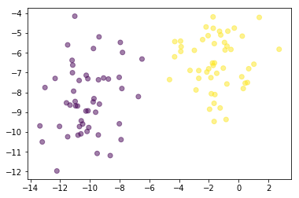
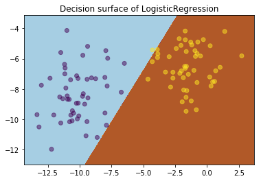
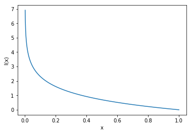
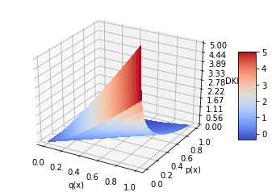
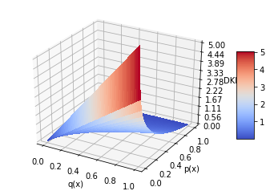
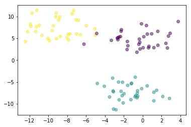
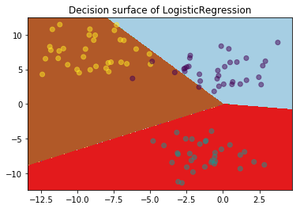
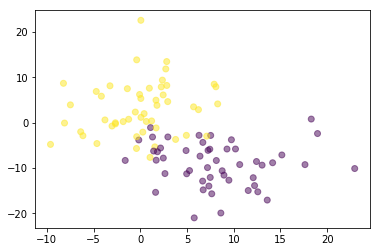

目录
- 线性可分二分类问题
- 线性可分多分类问题
- 线性可分多类别多分类问题
- 特征组合解决线性不可分问题
- 并行计算
- 在线学习
线性可分二分类问题
描述
logistic regression是我见过最简单的模型，它属于加法模型里面，而且非常好理解。当我们学一个模型的时候主要抓住以下三个点：1.如何推断。2.目标函数。3.如何更新。我们的logistic regression模型非常直观地解决了上面几个问题：1.通过线性变换后再使用sigmoid函数把数值压缩到0-1之间。2.使用非常火的交叉熵的目标函数来判断信息之间的相识度。3.使用非常火的梯度更新的方法来更新我们的权重。其实仔细看你会发现logistic regression是神经网络的超级简化版，尽管它如此简单，它能够在各种数据集上得到很不错的效果。
算法步骤
问题描述：给定训练数据$X$:(N, D)和$Y$:(N, 1),求解$W$:(D,1)和$b$:(1,1)
1.只做一次线性变换
$
z = WX + b
$
2.激活函数，把数据压缩在0-1之间
$a = \frac{1}{1 + e^{-z}}$
3.目标函数是交叉熵的退化版
$L(W) = \frac{-1}{N} (Y^T log(a) + (1- Y)^T log(1 - a)) $
4.求梯度
$\frac{\partial L}{\partial W} = \frac{1}{N} X^T (a - Y) $
$\frac{\partial L}{\partial b} = \frac{1}{N} \sum_{i}^{N} (a - Y)$
5.更新梯度
$W = W - lr * \frac{\partial L}{\partial W}$
$b = b - lr * \frac{\partial L}{\partial b}$
代码实现
1 | import numpy as np |
测试
1 | import numpy as np |
1 | # generate 2d classification dataset |
1 | # 可视化数据 |
1 | # 可视化分类器边界 |
1 | # 数据可视化 |

1 | # 可视化分类边界 |

线性可分多分类问题
描述
我们在二分类的时候是使用sigmoid作为我们的激活函数，极大似然估计作为我们求解目标函数的手法。但是在多分类问题上，sigmoid变得不再适用，我们使用它的推广形式softmax函数（当只有两个类别时，退化成sigmoid），softmax有很优良的性质，不同类别之间不是相互独立的，举个例子：一个样本里面猫类别的变化会影响到狗这个类别。目标函数我们仍然使用交叉熵，更新手法仍然使用梯度下降。
小插曲
上面提到了交叉熵这个概念，不知道你有没有被弄混>_<。其实它本身是非常好懂的，并且非常好用和非常重要，以至于我要在这里开个小窗口说一下，来让你感受为什么logistic regression要使用这样一个损失函数作为目标函数。本小结按照三个方面展开：1.信息量。2.KL散度与交叉熵
信息量
信息量顾名思义是：你从一件事中获得信息的多少。举个例子让你感受一下：
- 美国男篮拿到奥运会金牌
- 中国男篮拿到了奥运会金牌
上面两个例子，你觉得那个信息量更大？那肯定是第二个啊，美国队那奥运会金牌已经是司空见惯的事情，然而第二个例子发生的概率很低，这就会给到我们很多信息。这时候你已经形成对信息量的直观理解，用公式表示出来是这样的：
$$
I(x_0) = -log(p(x_0))
$$
$p(x)$是我们的概率密度函数，$x_0$是离散型随机变量$X = x_0$，函数画出来是这样滴：
1 | x = np.linspace(0.001, 1, 1000) |

KL散度与交叉熵
在机器学习中每个样本通常会有两种分布，一种是样本输入在机器学习模型后产生的分布，另一种是样本真实标签的分布。我们如何衡量这两种分布的差异呢？对啦，就是使用KL散度，它能够衡量两个分布的差异。比如说我们有两个分布，一个是$q(x)$代表真实分布，一个是$p(x)$代表模型生成的分布，那么我们可以使用以下式子来表示：
$$
D_{KL} = \sum_i^N q(x_i) \log \frac{q(x_i)}{p(x_i)}
$$
1 | # 可视化我们的函数 |

我们以上式子展开：
$$
D_{KL} = \sum_i^N = q(x_i)log q(x_i) - q(x_i)\log p(x_i)
$$
因为我们训练集真实的分布已经是知道了，所以前部分在模型的训练时是不会变的，所以取后面一部分，式子简化成交叉熵的形式：
$$
H(p, q) = \sum_i^N = -q(x_i)\log p(x_i)
$$
1 | # 可视化我们的函数 |

算法步骤
1.线性变化：
$$
z = WX + b
$$
2.softmax压缩数值(其中一个类别的计算方式)：
$$
\hat{y_k} = \frac{e^{z_k}}{\sum_m^M e^{z_m}}
$$
3.目标函数：
$$
J = \frac{1}{N} \sum_i^N -y_i \log \hat{y_i}
$$
4.梯度更新，softmax的求导方法，课参照我的这篇blog：
$$
W = W - \alpha \frac{\partial J}{\partial W} = W - \alpha X^T (\hat{y} - y)\frac{1}{N}
$$
$$
b = b - \alpha \frac{\partial J}{\partial W} = b - \alpha (\hat{y} - y)\frac{1}{N}
$$
代码实现
1 | import numpy as np |
测试
1 | X, y = make_blobs(n_samples=100, centers=3, n_features=2, cluster_std=2) |
1 | data_visualize(X, y) |

1 | clf = Logistic_regression_multi_class(lr = 0.01, epoch=1000) |

线性可分多类别多分类问题
对于这个问题的分析我就简单讲解一下，因为很难找到相关的数据集来进行可视化操作。我简单描述一下这个问题：
| 长方形 | 甜的 | 红色 | |
|---|---|---|---|
| label | 0 | 1 | 1 |
| predicted | 0.1 | 0.7 | 0.8 |
一般出现多标签问题，我们的类别之间都是没有内在联系的，都是一些独立的特征，所以我们可以假设每个类别都是独立分布的，每个类别只有0或1的值，有K个二分类问题，要用到sigmoid函数。
所以对于上面给出的例子，我们可以这样计算：
$$
loss_{长方形} = -0 \log 0.1 - (1 - 0) \log (1 - 0.1)\\
loss_{甜的} = -1 \log 0.7 - (1 - 1) \log (1 - 0.7)\\
loss_{红色} = -1 \log 0.8 - (1 - 1) \log (1 - 0.8)\\
loss = loss_{长方形} + loss_{甜的} + loss_{红色}
$$
那么我们的loss function可以这样表示：
$$
J = \frac{-1}{N} \sum_i^N \sum_k^K y_{i,k} \log \hat{y_{i, k}} + (1 - y_{i, k}) \log (1 - \hat{y_{i, k}})
$$
解决线性不可分问题
在这里我不谈核函数，因为使用kernel trick之后，函数的训练方法和更新方法都会出现变化，简单来说那就是svm那边的事情了。所以我避过这个问题直接谈组合特征，构造多项式的特征，弊端就是升维后计算量加大，这里有点用到泰勒的思想：任何函数都可以约等于一个多项式方程：
$$
f(x) \approx a + bx + cx^2 + dx^3 + …
$$
代码实现
1 | import numpy as np |
测试
1 | X, y = make_blobs(n_samples=100, centers=2, n_features=2, cluster_std=5) |
1 | data_visualize(X, y) |

1 | clf1 = Logistic_regression_two_class() |
1 | from sklearn.metrics import accuracy_score |
1 | print ("clf1: ", accuracy_score(y_pred=clf1.predict(X), y_true= y)) |
clf1: 0.86
clf2: 0.88
并行计算问题
展示没有这种需求，而且资料比较少，找到这两个blog讲解得很不错：
在线学习
更新方法跟使用全部数据来训练是一样的，也可以像神经网络一样，存储来一定数量K = batch size然后才做更新